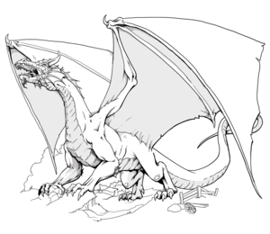

Smok to mityczne i fikcyjne stworzenie najczęściej wyobrażane w postaci olbrzymiego i lotnego gada obdarzonego zdolnością ziania ogniem. Występują w licznych mitach, legendach, literaturze, filmach i grach. W niektórych przypadkach przedstawiane są jako istoty obdarzone dużą inteligencją, potrafiące posługiwać się magią, znające ludzką mowę, posiadające i strzegące rozmaitych skarbów. Najczęściej smok ma cztery łapy i skrzydła, natomiast często pojawiający się w heraldyce smok dwunogi nosi nazwę wiwern.
Smoki są istotami reprezentującymi siły natury: z żywiołów zwłaszcza ogień i powietrze. W mitologiach wielu kultur występują też pokrewne zwierzęta podobne do smoków
Smoki pojawiają się w wielu mitologiach, w tym mitologii greckiej. Zazwyczaj pełnią funkcję strażników, podobnie jak gryfy, przypisywane im są także mądrość i siła. Zawsze czujny smok stał na straży złotego runa z polecenia boga Aresa, inny pilnował wyroczni Apolla w Delfach. Smoka żyjącego obok źródła w okolicy późniejszego miasta Teby zabił Kadmos; z zębów smoka posianych w ziemi powstali dzielni wojownicy[5][6]. Ze smokami walczyło wielu mitycznych bogów i bohaterów, m.in. Apollo (smok Pyton), Jazon (smok pilnujący złotego runa), Herakles (Ladon), czy Perseusz (smok Cetus). W mitologii sumeryjskiej bogini Tiamat, z której powstała ziemia i niebo, przedstawiana była pod postacią smoka.